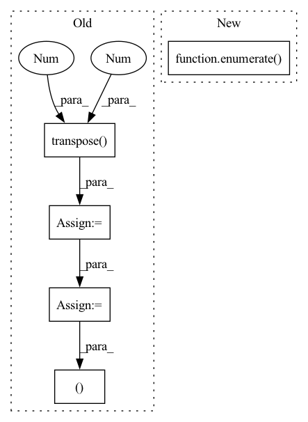

Pattern ID :15108
Before Change
n_chan_out = min(n_chan_ref, n_chan_est)
if n_chan_ref > n_chan_est:
SDR = SDR.transpose(-2 , -1 )
SIR = SIR.transpose(-2, -1)
SAR = SAR.transpose(-2, -1)
SIR_npy = SIR.cpu().detach().numpy()
SDR_out = SDR.new_zeros(b_shape + (n_chan_out,))
SIR_out = SIR.new_zeros(b_shape + (n_chan_out,))
SAR_out = SAR.new_zeros(b_shape + (n_chan_out,))
p_opts = np.zeros(b_shape + (n_chan_out,), dtype=np.int64)
for m in np.ndindex(b_shape):
dum, p_opt = _linear_sum_assignment_with_inf(-SIR_npy[m])
SDR_out[m] = SDR[m + (dum, p_opt)]
SIR_out[m] = SIR[m + (dum, p_opt)]
SAR_out[m] = SAR[m + (dum, p_opt)]
p_opts[m] = p_opt
p_opts = pt.from_numpy(p_opts).to(SDR_out.device)
return SDR_out, SIR_out, SAR_out, p_opts
def _linear_sum_assignment_with_inf(
cost_matrix: np.ndarray,After Change
for m in np.ndindex(b_shape):
dum, p_opt = _linear_sum_assignment_with_inf(loss_mat_npy[m])
loss_out[m] = loss_mat[m + (dum, p_opt)]
for i, arg in enumerate( args) :
args_out[i][m] = arg[m + (dum, p_opt)]
p_opts[m] = p_opt
In pattern: SUPERPATTERN
Frequency: 3
Non-data size: 5
Instances Fragment ID: 51249164
Project Name: fakufaku/torchiva
Commit Name: d2b2bceef6944715a6274920e6ec7b0374367ccd
Time: 2022-01-31
Author: robin.scheibler@linecorp.com
File Name: torchiva/metrics.py
M Class Name: AnonimousClass
N Class Name: AnonimousClass
M Method Name: _solve_permutation(1)
N Method Name: _solve_permutation(3)
M Parent Class:
N Parent Class:
M File Name: torchiva/metrics.py
N File Name: torchiva/metrics.py
M Start Line: 204
M End Line: 234
N Start Line: 150
N End Line: 182
Before Change
preds.append(self.Linear(h))
preds = torch.stack(preds, dim = 1)
if y is not None:
preds_ = torch.transpose( preds, 1 , 2 )
//print(preds.size())
y = y.long()
loss = self.Loss(preds_, torch.squeeze(y))
return preds, loss
return preds
After Change
//xs = [torch.squeeze(k) for k in xs]
preds_ = []
loss = 0
for i,k in enumerate( xs) :
hs, cs = self.rim_model(row_index, ind, k, hs, cs)
preds = self.Linear(hs.contiguous().view(x.size(0), -1)) Fragment ID: 51249353
Project Name: dido1998/recurrent-independent-mechanisms
Commit Name: d87a800096eaa36730cbabac535eea24973f3799
Time: 2020-02-11
Author: adidolkar123@gmail.com
File Name: networks.py
M Class Name: CopyingModel
N Class Name: CopyingModel
M Method Name: forward(5)
N Method Name: forward(5)
M Parent Class: nn.Module
N Parent Class: nn.Module
M File Name: networks.py
N File Name: networks.py
M Start Line: 255
M End Line: 276
N Start Line: 291
N End Line: 313
Before Change
return inp
inp = inp.reshape(ctx.dims.batch, -1, ctx.dims.spatial_mixing_kernel, ctx.dims.features)
inp = inp.transpose( 0, 3 , 1 , 2)
shape = inp.shape
transposed_shape = list(shape)
transposed_shape[3], transposed_shape[2] = transposed_shape[2], transposed_shape[3]
inp = jnp.einsum("bfrs,sz,sz->bfrz", inp, weights[0], mask)
for wgt in weights[1:]:
inp = activate(ctx, inp)
inp = inp.reshape(*transposed_shape)After Change
inp = inp.reshape(ctx.dims.batch, -1, *[ctx.dims.spatial_mixing_kernel] * max_dims, ctx.dims.features)
original_dims = "".join(chr(ord("a") + i) for i in range(len(inp.ndim)))
for i, wgt in enumerate( weights) :
new_dims = original_dims[:i + 2] + "z" + original_dims[i + 3:]
reduced_dim = original_dims[i + 2]
if i > 0: Fragment ID: 51249029
Project Name: homebrewnlp/homebrewnlp-jax
Commit Name: e3894fce349563809e673ef1a497a476f9bd8d34
Time: 2022-09-01
Author: 39779310+ClashLuke@users.noreply.github.com
File Name: src/model/mixer.py
M Class Name: AnonimousClass
N Class Name: AnonimousClass
M Method Name: mix(2)
N Method Name: mix(2)
M Parent Class:
N Parent Class:
M File Name: src/model/mixer.py
N File Name: src/model/mixer.py
M Start Line: 12
M End Line: 34
N Start Line: 14
N End Line: 32